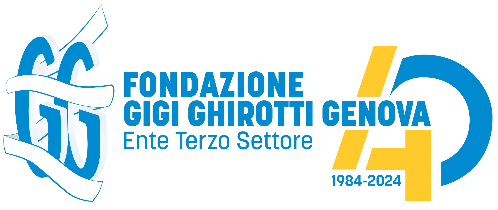
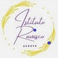

Disney 100
Concerto benefico della Banda Musicale di Pontedecimo a favore della Fondazione Gigi Ghirotti, con la partecipazione di Scuola Ghersi e dell'Istituto Ravasco di Genova
Sabato 16 novembre ore 21:00 al Teatro della Gioventù in Via Cesarea 16
Pezzo 1
Istituto Ravasco
Pezzo 2
Istituto Ravasco
Pezzo 3
Istituto Ravasco
Intervento Professor Franco Henriquet
Fondatorel'associazione Gigi Ghirotti per lo studio e la diffusione della terapia del dolore
A.A. V.V. - arr. N. Iwai - Disney Fantasy
Banda Musicale
A. Menken, arr. J. Moss - Hercules
Banda Musicale
Lin-M. Miranda, arr. P. Murtha - Encanto
Banda Musicale
A. Menken, arr. P. Lavender - Colors of the Wind
Banda Musicale
E. John, arr. J. Higgins - The Lion King
Banda Musicale
Il caffè della Peppina
Scuola Ghersi
Arr. S. O'Loughlin - Highlights from Frozen
Banda Musicale
Sherman, T. Ricketts - Selections from Mary Poppins
Banda Musicale
K. Badelt, arr. J. Wasson - Pirates of the Caribbean
Banda Musicale
Saluti conclusivi

